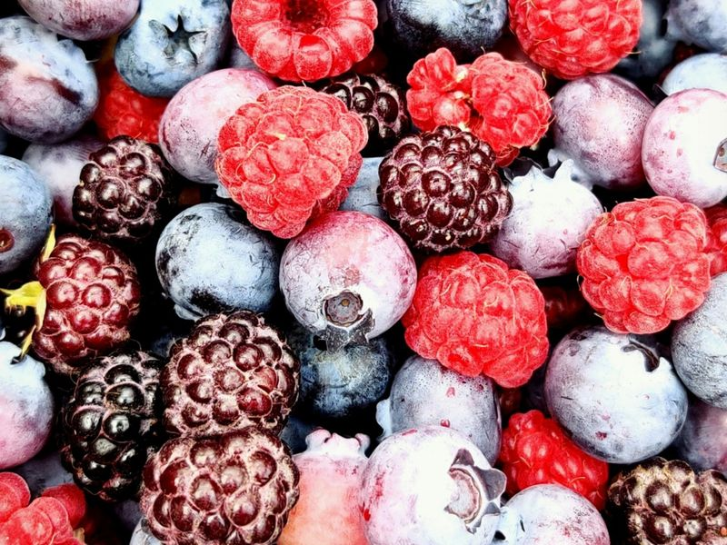
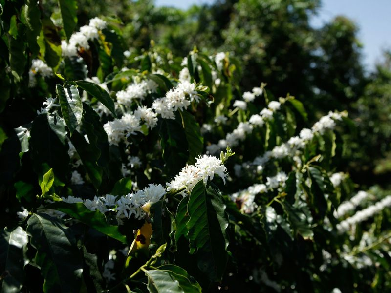
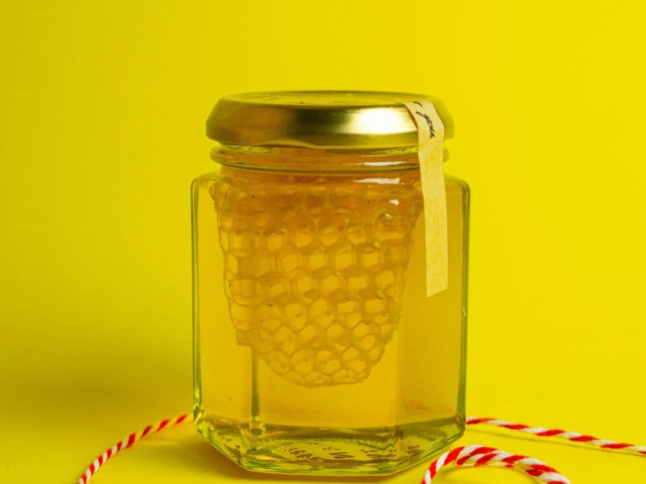
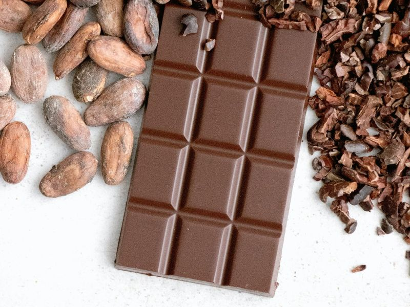
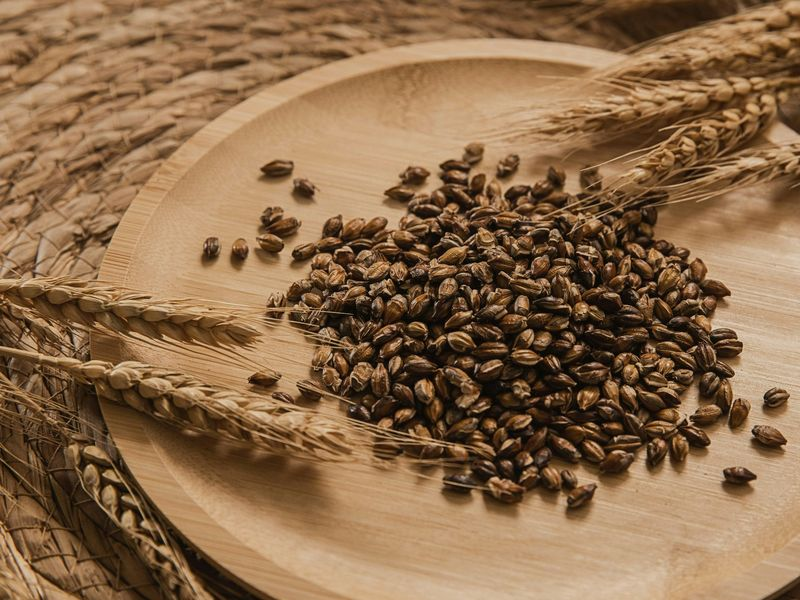

喝咖啡时，
你到底在尝什么？
风味不只是“好喝”或“不好喝”。本章把一杯咖啡拆成酸 · 甜 · 苦 · 香 · 口感五个维度， 带你建立识别风味的入门框架。
一杯咖啡里，“风味”由什么构成？
你以为喝到的“味道”主要由舌头完成，其实大部分信号来自鼻腔——专业上把一杯咖啡里被感知的整体分为三件事：
舌头上尝到的基本味：酸、甜、苦、咸、鲜。咖啡里前三种最常见。
鼻腔嗅到的挥发物分子，从花香到巧克力，是咖啡风味的主要来源。
液体在嘴里的物理感：厚薄、顺滑、颗粒感、涩感等。
风味 = 味道 + 香气 + 口感
咖啡里80% 以上的“风味感知”由香气贡献，舌头只承担基础味觉。这也是为什么咖啡液温度不同，闻到的味道就完全不一样——温度决定哪些挥发物分子跑得快。
为什么“闻”到的比“喝”到的更丰富？
舌头只能尝出酸、甜、苦、咸、鲜五种基础味；你能分辨出花香、柑橘、巧克力，主要靠鼻子。咖啡品鉴把嗅觉拆成两条路径：
鼻前嗅觉
香气从鼻孔进入，直接到达嗅上皮。这是“闻”到的香气，辨识度高——你能一下子判断“这是花香”还是“这是坚果香”。
鼻后嗅觉
香气从口腔进入，与舌头尝到的味道、液体口感混在一起，再传到嗅上皮。这是“喝”到的完整风味，也是我们日常说“这杯咖啡好喝”的主要来源。
风味 = 鼻前嗅觉 + 鼻后嗅觉 + 味觉 + 口感 + 大脑联想
舌头只负责“酸甜苦咸鲜”五种基本味；鼻腔负责捕捉成百上千种挥发性香气。喝咖啡时吸一口、含一下、再咽下去，才能让鼻前、鼻后两条嗅觉路径同时工作，把完整风味“打开”。
舌头上能尝到的 5 种基础味道
咖啡里最常见的是酸、甜、苦。咸味和鲜味在咖啡中几乎不期望出现，若明显感受到，往往是品质或萃取的提示。
酸
明亮、活泼，像柑橘或青苹果。适度酸让咖啡更有层次。
甜
焦糖、蜂蜜、成熟果肉的甜感。好咖啡里常伴随醇厚感。
苦
黑巧、烤坚果、香料底韵。深烘豆的苦更醇厚明显。但苦味的主因不是咖啡因——咖啡因只贡献约 15% 的苦感，真正的主角是烘焙中由绿原酸生成的绿原酸内酯（浅中烘）与苯基茚满（深烘）。这也解释了为什么低因咖啡照样苦，而深烘咖啡因略降、苦感反而更强。
咸 / 鲜
专业杯测里不期望出现，一旦明显说明萃取或保存可能出问题。
SCA 风味轮：咖啡行业的“风味地图”
现行的 Coffee Taster's Flavor Wheel（咖啡品鉴风味轮）是 2016 年由当时的 SCAA 联合 World Coffee Research 修订发布的——这是它诞生 20 年来第一次改版（SCAA 与 SCAE 到 2017 年才合并为 SCA）。它把可识别的咖啡风味归进三层同心环：内圈大类 → 中圈方向 → 外圈具体描述词。入门阶段，先记住最外圈的几个大类就够了。
入门只需记住 8 大风味家族，不必一开始就被上百种细分词困住。
三步识别法
- 先定家族：偏水果？偏甜？偏香料？
- 再选方向：柑橘？莓果？坚果？
- 最后给出一个词：柠檬？蜂蜜？巧克力？
不要硬凑词
风味轮是工具不是束缚。如果只能说出“花香”或“有点酸”，也完全没问题——诚实比炫技更重要。
入门先认识的 6 大风味家族
不用背下所有细分词，先把常见咖啡归类到这 6 个大家族里， tasting 就有了抓手。

Photo: Sneha Cecil / Unsplash🍊 水果家族
咖啡里最常见的“清爽感”来源。

Photo: Projeto Café Gato Mourisco / Unsplash🌸 花香家族
轻盈、优雅，常出现在高海拔阿拉比卡里。

Photo: Cristina Pop / Unsplash🍯 甜香家族
甜而不腻的焦糖感、糖蜜感，增加醇厚度。

Photo: Tetiana Bykovets / Unsplash🍫 坚果 / 可可
中深烘豆子的“安全感”，口感扎实。
🌶️ 香料家族
温暖、厚重，常和印尼豆、深烘豆联系在一起。

Photo: Charles Chen / Unsplash🌾 烘焙 / 草本 / 谷物
从青草、麦芽到烤麦，往往代表更成熟或更深烘焙。
先会分类，再求精准
一开始能说出“这是水果调”已经足够好；等喝过几十杯不同产地、不同处理法的咖啡后，再慢慢细化到“像蓝莓还是像柑橘”。不要急于对照风味轮上的每一个词。
杯测笔记上的分数，到底怎么读？
豆袋上印的“85 分”、买手的报价、CoE 的获奖分数——这些数字从哪来？而 SCA 官方现在又在用什么？这是中文圈最容易混淆的一环，我们把它对上。
先给结论：这里同时存在两套体系，而且会长期并存。一套是你在豆袋、报价单、比赛成绩上随处可见的旧版 100 分制；另一套是 SCA 现在官方使用的 CVA（Coffee Value Assessment，咖啡价值评估）。它们不是简单的“新旧替代”，而是行业通行语言与官方现行标准的关系。
我 2026 年同时学的 Q Grader 和感官技能：Q 用的是新体系 CVA，而感官技能那一套打分细节还是旧版 100 分制。所以下面这两套我不是从资料里读来的——是分别上课、分别练过的。这一节我把它们对上。
一、旧版 100 分制：你在包装上看到的就是它
2004 年由 SCAA 发布（后经合并沿用），长期由 CQI 用于 Q Grader 的培训与认证。它的核心是一个总分：满分 100 分，由十项属性构成。
| 构成 | 计分方式 |
|---|---|
| 七项属性 干香／湿香、风味、余韵、酸质、醇厚度、均衡度、总评 |
每项 6–10 分，0.25 分递增 6＝good 7＝very good 8＝excellent 9＝outstanding |
| 三项属性 一致性、干净度、甜感 |
按杯计分：每支样品 5 杯、每杯 2 分，每项满分 10 分 干净的好咖啡这三项几乎总是满分，即 30 分 |
| 缺陷 | 扣分项：缺陷强度（2 或 4）× 受影响杯数，从总分中扣除 |
十项加起来是 100 分，但实际分数会落进几个档位——其中“80 分”就是精品咖啡的门槛：
| 总分区间 | 含义 |
|---|---|
| 低于 70 | 有缺陷 |
| 70–79.75 | 商品豆（commodity）——风土个性不明显 |
| 80 及以上 | 精品咖啡（specialty）——这就是“80 分精品线”的出处 |
| 84 以下 | 风味简单的通用精品，常用于拼配 |
| 85 以上 | 单一产地（single origin）级别 |
| 90 以上 | 极稀有，可支撑高价的超精品 |
除了杯测分数，旧版对生豆与熟豆本身也有要求：生豆在 350 g 样品中最多允许 5 个二级瑕疵、不允许一级瑕疵；熟豆 100 g 中不允许有未熟豆（quaker）；水活度需低于 0.70。
二、SCA 现在用的 CVA：没有总分了
2025 年 SCA 从 CQI 接管 Q 项目后，官方评价体系换成了自研的 CVA。它最大的变化是：不再依赖一个单一分数，而是拆成四种互补的评估——可以只做其中一种，也可以全做，做得越多，画像越完整。
| 评估类型 | 评什么 |
|---|---|
| 物理评估 Physical | 颜色、瑕疵、含水率、粒径等物理属性；沿用 2004 年的生豆分级体系 |
| 描述性评估 Descriptive | 用标准化语言客观记录香气、风味、质地、余韵。评的是强度而非质量（15 分制），没有总分——设计意图就是不做评判 |
| 情感性评估 Affective | 记录评估者（或其代表的市场／用途）的偏好。0–9 分共八个类别，上限 72 分 |
| 外在性评估 Extrinsic | 杯外因素：认证、产地可追溯性、处理方式等能增加价值的信息 |
一个总分决定一切
十项属性汇成一个 100 分制的数字。“85 分”可以跨品牌、跨国家直接比较——这是它最大的优点，也是它被批评“过度简化”的原因。
四张表，各记各的
描述性表只客观记录、不给分；情感性表只记偏好、不追求普适标准；外在性表把产地、认证、处理方式这些“杯外价值”也算进来。
CVA 里没有“80 分精品线”
新版取消了 100 分制，情感性评估的上限是 72 分——所以“80 分”这个门槛在新体系里并不存在。为衔接旧语言，SCA 另外发布了一份把情感性分数换算到 100 分制的对照表。换句话说：你在豆袋上看到的 80 分、85 分、90 分，永远是旧版语言；而 SCA 官方现在打分的逻辑已经换了。
还有一件反直觉的事：旧版 100 分制并没有“被淘汰”。我上感官技能课时，用的就是它的打分细节——也就是说，SCA 自己的一门课仍在教旧版杯测表，另一门课（Q）已经换成了 CVA。这解释了很多人的困惑：为什么官方换了体系，豆袋上的分数却一点没变。
如果你在 2025 年 10 月之后考的 Q Grader，你学的已经不是“打 100 分”了；而你在包装上看到的分数，仍然是旧版语言。两套东西会长期并存——看懂它们的区别，比记住任何一个数字都重要。
风味从哪儿来？
同样的“风味”，可能在豆子还是绿色时就形成，也可能在烘焙过程中才出现。
🌱 生豆阶段形成
品种基因、所处海拔、土壤、处理法决定了“基础风味”——比如柑橘调、花香底子多在生豆阶段就已经定型。
🔥 烘焙阶段形成
加热产生美拉德反应、焦糖化反应——巧克力、焦糖、烤麦一类的风味主要在此阶段诞生。烘焙度直接决定你能“激活”多少种风味。
☕ 萃取阶段影响
萃取率与温度决定你能从豆子里得到多少。萃取不足发酸涩，过度则发苦杂——同样一颗豆子冲得不同，可能给出完全不同的风味。
⚠️ 储存阶段损失
香气分子随时间挥发、被氧化。在整豆、带单向排气阀包装、常温避光保存的前提下，多数咖啡在烘焙后 2–6 周内表现最好：浅烘偏长、深烘偏短，冷冻可显著延长（详见烘焙章的排气与适饮期）。判断依据是香气是否变平、是否出现纸味或油耗味，而不是日历。
怎么练出“喝得出”的能力？
从生活里找样本
走进水果店、调料区、香料柜，把“柠檬、蓝莓、肉桂、丁香、可可”挨个闻一遍。大脑需要先把“标准样本”存进记忆库。
同一支豆子多次喝
每次只关注一种维度：第一口只问“酸不酸”，第二口只问“甜不甜”，第三口只问“像哪种家族”。
控制变量对比喝
推荐做法：同产地 / 不同处理法各买一袋对照；同一支豆子手冲 vs 法压各做一杯。
记录你的品鉴笔记
哪怕只写“酸 + 水果 + 余韵短”也很有价值。三个月后回看，你会被自己的进步惊艳到。
风味速查卡
| 维度 | 正面提示 | 可能的原因 |
|---|---|---|
| 酸度 | 明亮、果酸 | 高海拔 / 水洗 / 浅烘 |
| 甜度 | 蜂蜜、焦糖感 | 成熟果实 / 蜜处理 / 中烘 |
| 醇厚度 | 丝绸般 / 浆感 | 湿刨 / 深烘 / 罗布斯塔混 |
| 水果调 | 柑橘、莓果 | 日晒 / 厌氧 / 埃塞俄比亚 |
| 香料感 | 肉桂、丁香 | 湿刨 / 深烘 / 印尼 |
| 余韵 | 悠长 / 干净 | 豆子新鲜 + 萃取得当 |
| 负面提示 | 霉味 / 纸味 / 焦苦 | 储存不当 / 烘焙失败 / 萃取过萃 |
💬 评论区
在 GitHub Discussions 留言讨论 · 无需登录，登录 GitHub 账号即可评论 · 查看历史讨论